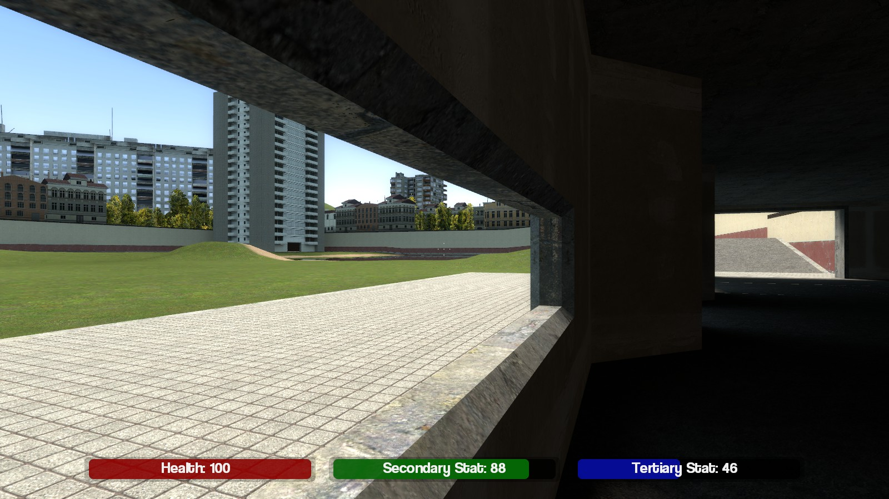

Since the design is a gamemode, several other existing gamemodes were studied to understand their mechanics and inner workings. The gamemodes chosen deliberately bear similarity to the hypothetical design.
Garry's Mod Stranded was studied most in-depth. This gamemode implements a needs system that the player must follow in order to ensure their continued survival. It uses hunger, health and sleep as constantly depleting needs which must be replenished periodically for the player to continue surviving. It also implemented a simple Role-playing game (RPG) system that included skill levels in areas such as Woodcutting, Planting and Mining. The idea of an RPG skills system, however, does not seem entirely appropriate for a gamemode with short rounds. But a more interesting skills minigame or button sequence for actions may find its way into the gamemode. Garry's Mod Stranded also included a crafting system for creating items from other materials, with the right equipment. This is another idea that may be interesting to include in my gamemode, so that the humans or robots could assemble weapons out of household items.
Trouble in Terrorist Town is one of the largest sources of inspiration for the gamemode. Its round-based nature and the detective work and mistrust involved are ideas that I have re-used for my own gamemode. However, my gamemode is still quite different in the way that the traitors (i.e. robots) must approach destroying the humans, and very likely the ratio of humans to robots compared to that of traitors to innocent.
DarkRP is the rival for first place with TTT in the number of players and servers available. It is a persistent world gamemode where players can take on 'jobs' that affect their role in the society. The theme is of course a 'dark' kind of roleplay, as the name suggests. DarkRP can be easily modified to add new jobs, items and weapons to customise and enhance the roleplaying experience. Default or vanilla DarkRP includes Gangsters, Gun Dealers, Drug Dealers, Doctors, Hobos and Citizens. The idea of jobs or roles may also find its way into my gamemode, since adds more depth to an outwardly peaceful world as in my gamemode. The technically good code base of DarkRP is also a standard to aim for, with the number of continual bugfixes and updates added to the gamemode and the ease with which it can be modified and extended, without modifying the original game code.
Since I already have some knowledge in the fundamentals of programming and scripting, I have chosen to focus my programming research on the specifics of the lua language engine in Garry's Mod. This firstly involves familiarising myself with the specifics of the lua language as opposed to other languages. The lua-users wiki is a very useful resource for learning about the nuances and specifics of the language. To familiarise myself with the language, I read the (rather dry) Lua Short Reference for Lua 5.1. This is a six-page document that very tersely outlines the core functionality of the lua language.
I have found that the Garry's Mod Wiki is a good reference material for the Application Programming Interface (API) exposed to the lua scripting engine that allows it to control the actions of the game. The wiki, developed mostly by Facepunch Studios, provides an invaluable resource for detailing the classes, enumerations, events, globals, hooks and libraries that are used in scripting objects, gamemodes et cetera in Garry's Mod. The wiki is best read together with lua scripts for research or as a reference when scripting. Although this wiki contains information on the specific uses of many core lua language features, the lua-users wiki was a more useful resource for that information.
From reading existing source code and referencing the Garry's Mod Wiki, I have been enable to enhance my understanding of how to approach creating my own gamemode. The knowledge involved in this includes dealing with the many groups of functions that control various aspects of the game engine. This includes: Entities (interactive game objects), SWEPs (scripted weapons) and user interfaces (through vgui/derma/draw/surface) through their appropriate interfaces.
Since Garry's Mod runs on the Source Engine from Valve Software, it is useful for me to familiarise myself with the engine. This is important to me since I intend to create a map to suit the implementation of gamemode. The Valve developer wiki has a series of documentative and tutorial style articles on the topic of creating maps for the Source Engine. I found in particular the tutorial on creating a very basic map to be useful as a good starting point. The knowledge that I have gained from using the Hammer map editor to follow that tutorial, along with further reading and experimentation (see below) will be useful when I create my own map.
Before I started my project, I needed to ensure two important things for the project: That I would be able to revert any bad changes to the source code and that I would be able to accurately trace the history of its development. To satisfy these requirements, I decided that I would have to use a version control system to manage my project's source code. The version control system I chose was git, because I had previously read how it was superior to other version control systems. Since I had no experience with other version control systems, I decided it was best to stick to git and attempt to learn version control by using it.
To learn how to use git, I read the standard documentation that comes with the source code of the program. The git tutorial and git everyday articles were particularly useful for a start. The articles on specific git commands were also useful when learning the right way to invoke each git command. To learn more about git, I also experimented with it (see below).
Aim: To create a very simple lua script that causes a short message to be displayed to the user.
Materials: Text editor, Garry's Mod.
Method:
print(CLIENT)
local hwPanel = vgui.Create("DFrame")
hwPanel:SetPos(200,200)
hwPanel:SetSize(400,300)
hwPanel:SetTitle("Hello world!")
hwPanel:SetVisible(true)
hwPanel:SetDraggable(true)
hwPanel:ShowCloseButton(true)
hwPanel:MakePopup()
lua_openscript_cl hello_world.lua at the consolebind m "lua_openscript_cl hello_world.lua" at the console to bind the m key to opening the scriptResults: The window appeared when I ran the script from the console. It had all of the expected properties that were specified in the script. It also caused my avatar to become immobile and unable to aim his weapon until I closed the window.
Conclusion: As I create the user interface for my gamemode, I can test its validity before I implement the in-game method of opening it by causing it to open with a script. I could also bind the command that runs this script to a key
Aim: To create a simple test map for the purpose of learning how to make a map.
Materials: Valve Developer wiki open in browser, Source SDK
Method:
Aim: To create a prototype of the Gamemode's Graphical User Interface
Materials: Text editor, Garry's Mod, graphics editor, file browser
Method:
This screenshot will be used to sketch the GUI.
The three bars here represent the three statics that a player must manage to continue surviving in the gamemode. The red is health, the green is energy and the third is the statistic specific to the player's class (human or robot). We can also see a round timer at the top. We can see that our fictional player "Bruce Bloggs" has 23% health.
Now that I have created a graphical prototype of what I want my interface to look like, I will create a rough implementation of it in the game.
In my lua prototype, I am going to ensure that the interface is scalable to different screen resolutions. This is important since the coordinate system used to draw the interface is based on screen pixels in the game window.
AddCSLuaFile("cl_init.lua")
AddCSLuaFile("cl_hud.lua") --This is needed so that the server will send this file to the client
include("cl_hud.lua") --This is needed so that this file will be executed by the client
local fs = 32
surface.CreateFont("StatFont", {font = "Coolvetica", size = fs})
function HUDPaintStats()
-- A check to see if the hud should be drawn
local shouldDraw = GetConVar("cl_drawhud")
if (shouldDraw:GetInt() == 0) then return end
--[=[ Local variables:
-- Screen dimensions, box dimensions,
-- rounding, a reference to the local player,
-- and an alphatransparency constant ]=]--
local sw = ScrW();
local sh = ScrH();
local boxWidth = 0.25
local boxHeight = 0.04
local boxYPos = 0.92
local rnd = 0.005*sw
local ply = LocalPlayer()
local alpha = 220
--[=[ Temporary testing variables
-- Real value for health, two contrived values for
-- stats and one for alphatransparency --]=]
local hp = ply:Health()
local twop = 0.88
local threep = 0.46
local alpha = 220
-- Health
-- Other stats are drawn similarly
-- Translucent black background
draw.RoundedBox(rnd,
0.095*sw, 0.915*sh,
(boxWidth+0.01)*sw, (boxHeight+0.01)*sh,
Color(0, 0, 0, alpha/2))
-- Black bar beneath the health bar
draw.RoundedBox(rnd,
0.1*sw, boxYPos*sh,
boxWidth*sw, boxHeight*sh,
Color(0, 0, 0, alpha))
-- Red bar that scales for the player's health
draw.RoundedBox(rnd,
0.1*sw, boxYPos*sh,
(boxWidth*sw)*(hp*0.01),
boxHeight*sh,
Color(150, 0, 0, alpha))
-- Labels
draw.SimpleText(string.format("Health: %d", hp),
"StatFont", 0.22*sw,
(((boxHeight+boxYPos)+(boxYPos))/2)*sh,
Color(255,255,255,alpha), 1, 1)
-- Similarly for twop as the second stat and threep as the third stat
...
end
hook.Add("HUDPaint", "HUDPaint_Stats", HUDPaintStats)
function HUDBlockElements(name)
local blockedElements = {CHudAmmo = true, CHudBattery = true, CHudHealth = true, CHudSecondaryAmmo = true}
if (blockedElements[name]) then
return false
end
end
hook.Add("HUDShouldDraw", "HUDBlockElements", HUDBlockElements)
Result:
Conclusion: Now that I have created an in-game prototype of the user interface with the three status bars, I can further extend and modify it later as needed.
Aim: To learn how to use version control by experimenting with git, and to set up the git repository for the gamemode.
Materials: Text editor, MSYSgit source code, MSYSgit binaries, command shell, a working folder, a folder msysgit/ to contain the program.
Method:
.\msysgit\ in the working folder..\msysgit\git\..\msysgit\msys.bat to compile git from source with the binaries.# Replace ${NAME} and ${EMAIL} with your full name and email address
$ git config --add user.name ${NAME} && git config --add user.email ${EMAIL}
msys.bat again.Conclusion: MSYSgit is now compiled and ready to be used in the project.
gitfoo, where you will make a new git repository. This will be referred to hereafter as the environment variable ${gitfoodir} as in bash.cd ${gitfoodir} # To change the current directory to gitfoo
git init # To create a new git repository foo.txt in the folder. Open it with a text editor and add the string "foo in a bar" followed by a newline. Save it.git add foo.txt to add foo.txt to the git index, followed by git commit. In the vi editor window that appears, write a message like 'Added foo.txt'.git log. There will only be one commit so far:$ git log
commit 053be5d6ff888a520cc0f9f7d7e529d1ba507ce3
Author: First Last
Date: Mon May 4 12:02:44 2015 +1000
Added foo.txt
$ git add foo.txt # Needs to be added for every commit
$ git commit # To confirm our changes to the files again
Now git log will show that there have been two changes. At this stage, we know enough to be able to create a new git repository to track the source code of the gamemode.
Conclusion: Now that I have an idea of the basics of git, I can move on to more serious experimentation with it.
$ mkdir -p hvr-repo/gamemodes/hvr/{backgrounds,gamemode}
gmad github repository.hvr.txt is necessarry to give the game engine the information it needs to load the gamemode from the main menu. The other two files are the images that the game engine will display on the main menu to show the player that they have that gamemode selected.
git init in hvr-repo/AddCSLuaFile("cl_init.lua").#Adds these two files to the index to track their changes in the next commit
$ git add init.lua cl_init.lua
#Commits the changes to the repository with a commit message
$ git commit -m "Add a hello world message to the client"
Conclusion: I am now able to use git to track the changes I make to my project as it develops. I have already created a repository which I will continue to use. I will learn to use more advanced features of git, such as branching and bisecting as they become useful to me.